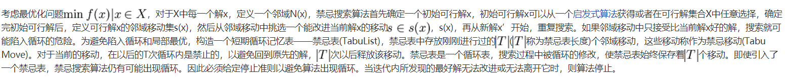

算法思想

通过保持一个禁忌表，以禁忌长度进行禁忌，遵守禁忌准则和藐视准则进行全局搜索。
示例
首先，我们对置换问题定义一种邻域搜索结构，如互换操作（SWAP），即随机交换两个点的位置，则每个状态的邻域解有Cn2=n（n一1）/2个。称从一个状态转移到其邻域中的另一个状态为一次移动（move），显然每次移动将导致适配值（反比于目标函数值）的变化。其次，我们采用一个存储结构来区分移动的属性，即是否为禁忌“对象”在以下示例中：考虑7元素的置换问题，并用每一状态的相应21个邻域解中最优的5次移动（对应最佳的5个适配值）作为候选解；为一定程度上防止迂回搜索，每个被采纳的移动在禁忌表中将滞留3步（即禁忌长度），即将移动在以下连续3步搜索中将被视为禁忌对象；需要指出的是，由于当前的禁忌对象对应状态的适配值可能很好，因此在算法中设置判断，若禁忌对象对应的适配值优于“ best so far”状态，则无视其禁忌属性而仍采纳其为当前选择，也就是通常所说的藐视准则（或称特赦准则）。
注意，出于改善算法的优化时间性能的考虑，若领域结构决定了大量的领域解（尤其对大规模问题，如TSP的SWAP操作将产生Cn2个领域解），则可以仅尝试部分互换的结果，而候选解也仅取其中的少量最佳状态。
算法步骤
简单TS算法的基本思想是：给定一个当前解（初始解）和一种邻域，然后在当前解的邻域中确定若干候选解；若最佳候选解对应的目标值优于“best so far”状态，则忽视其禁忌特性，用其替代当前解和“best so far”状态，并将相应的对象加入禁忌表，同时修改禁忌表中各对象的任期；若不存在上述候选解，则选择在候选解中选择非禁忌的最佳状态为新的当前解，而无视它与当前解的优劣，同时将相应的对象加入禁忌表，并修改禁忌表中各对象的任期；如此重复上述迭代搜索过程，直至满足停止准则。
条理化些，则简单禁忌搜索的算法步骤可描述如下：
（1）给定算法参数，随机产生初始解x，置禁忌表为空。
（2）判断算法终止条件是否满足？若是，则结束算法并输出优化结果；否则，继续以下步骤。
（3）利用当前解工的邻域函数产生其所有（或若干）邻域解，并从中确定若干候选解。
（4）对候选解判断藐视准则是否满足？若成立，则用满足藐视准则的最佳状态y替代x成为新的当前解，即x=y，并用与y对应的禁忌对象替换最早进入禁忌表的禁忌对象，同时用y替换“best so far”状态，然后转步骤6；否则，继续以下步骤。
（5）判断候选解对应的各对象的禁忌属性，选择候选解集中非禁忌对象对应的最佳状态为新的当前解，同时用与之对应的禁忌对象替换最早进入禁忌表的禁忌对象元素。
（6）转步骤（2）。
注意，根据（5）可知，最牛逼的解根本就不考虑它是不是在禁忌列表中，如果这些候选解都很弟弟，那就找非禁忌里面最优的了。这样，既可以保证不遗漏全局最优，又有利于跳出局部最优。